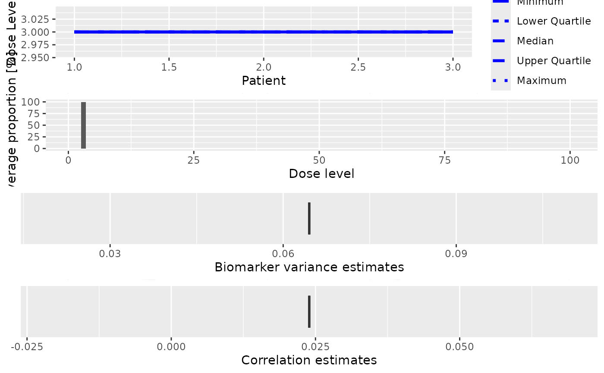

Plot dual-endpoint simulations
Source:R/Simulations-methods.R
plot-DualSimulations-missing-method.RdThis plot method can be applied to DualSimulations
objects in order to summarize them graphically. In addition to the standard
plot types, there is
- sigma2W
Plot a boxplot of the final biomarker variance estimates in the simulated trials
- rho
Plot a boxplot of the final correlation estimates in the simulated trials
Arguments
- x
the
DualSimulationsobject we want to plot from- y
missing
- type
the type of plots you want to obtain.
- ...
not used
Value
A single ggplot object if a single plot is
asked for, otherwise a gridExtra{gTree} object.
Examples
# Define the dose-grid.
emptydata <- DataDual(doseGrid = c(1, 3, 5, 10, 15, 20, 25, 40, 50, 80, 100))
# Create some data.
my_data <- DataDual(
x = c(
0.1, 0.5, 1.5, 3, 6, 10, 10, 10,
20, 20, 20, 40, 40, 40, 50, 50, 50
),
y = c(
0, 0, 0, 0, 0, 0, 1, 0,
0, 1, 1, 0, 0, 1, 0, 1, 1
),
ID = 1:17,
cohort = c(1L, 2L, 3L, 4L, 5L, 6L, 6L, 6L, 7L, 7L, 7L, 8L, 8L, 8L, 9L, 9L, 9L),
w = c(
0.31, 0.42, 0.59, 0.45, 0.6, 0.7, 0.55, 0.6,
0.52, 0.54, 0.56, 0.43, 0.41, 0.39, 0.34, 0.38, 0.21
),
doseGrid = c(
0.1, 0.5, 1.5, 3, 6,
seq(from = 10, to = 80, by = 2)
)
)
# Initialize the CRM model.
my_model <- DualEndpointRW(
mean = c(0, 1),
cov = matrix(c(1, 0, 0, 1), nrow = 2),
sigma2betaW = 0.01,
sigma2W = c(a = 0.1, b = 0.1),
rho = c(a = 1, b = 1),
rw1 = TRUE
)
# Choose the rule for selecting the next dose.
my_next_best <- NextBestDualEndpoint(
target = c(0.9, 1),
overdose = c(0.35, 1),
max_overdose_prob = 0.25
)
# Choose the rule for the cohort-size
mySize1 <- CohortSizeRange(
intervals = c(0, 30),
cohort_size = c(1, 3)
)
mySize2 <- CohortSizeDLT(
intervals = c(0, 1),
cohort_size = c(1, 3)
)
mySize <- maxSize(mySize1, mySize2)
# Choose the rule for stopping
myStopping4 <- StoppingTargetBiomarker(
target = c(0.9, 1),
prob = 0.5
)
myStopping <- myStopping4 | StoppingMinPatients(40)
my_size1 <- CohortSizeRange(
intervals = c(0, 30),
cohort_size = c(1, 3)
)
my_size2 <- CohortSizeDLT(
intervals = c(0, 1),
cohort_size = c(1, 3)
)
my_size <- maxSize(my_size1, my_size2)
# Choose the rule for stopping
my_stopping4 <- StoppingTargetBiomarker(
target = c(0.9, 1),
prob = 0.5
)
my_stopping <- my_stopping4 | StoppingMinPatients(40) | StoppingMissingDose()
# Choose the rule for dose increments
my_increments <- IncrementsRelative(
intervals = c(0, 20),
increments = c(1, 0.33)
)
# Initialize the design
my_design <- DualDesign(
model = my_model,
data = emptydata,
nextBest = my_next_best,
stopping = my_stopping,
increments = my_increments,
cohort_size = CohortSizeConst(3),
startingDose = 3
)
# Define scenarios for the TRUE toxicity and efficacy profiles.
beta_mod <- function(dose, e0, eMax, delta1, delta2, scal) {
maxDens <- (delta1^delta1) * (delta2^delta2) / ((delta1 + delta2)^(delta1 + delta2))
dose <- dose / scal
e0 + eMax / maxDens * (dose^delta1) * (1 - dose)^delta2
}
true_biomarker <- function(dose) {
beta_mod(dose, e0 = 0.2, eMax = 0.6, delta1 = 5, delta2 = 5 * 0.5 / 0.5, scal = 100)
}
true_tox <- function(dose) {
pnorm((dose - 60) / 10)
}
# Draw the TRUE profiles
par(mfrow = c(1, 2))
curve(true_tox(x), from = 0, to = 80)
curve(true_biomarker(x), from = 0, to = 80)
# Run the simulation on the desired design.
# We only generate 1 trial outcome here for illustration, for the actual study.
# Also for illustration purpose, we will use 5 burn-ins to generate 20 samples,
# this should be increased of course.
my_sims <- simulate(
object = my_design,
trueTox = true_tox,
trueBiomarker = true_biomarker,
sigma2W = 0.01,
rho = 0,
nsim = 1,
parallel = FALSE,
seed = 9,
startingDose = 6,
mcmcOptions = McmcOptions(
burnin = 1,
step = 1,
samples = 2
)
)
# Plot the results of the simulation.
print(plot(my_sims))
